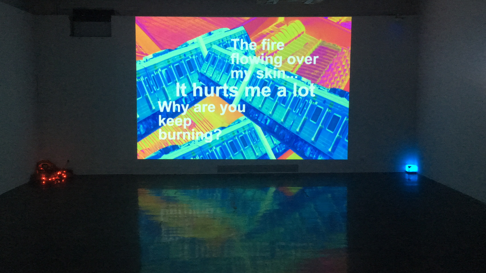

Crazy World project is an image of our future world. The background sound is from the mother of the earth, and she told about what she saw that happens on the planet. It is like a mother who doesn’t know what her children did. In this future world, she asks a series question: Why the boat stay in the boiling water? Why the magpies in home grows as big as the plane? Why are trains not working in the same time-space? We live in this crazy world, and everything will be ridiculous. This video shows a beautiful and colorful world, but behind this beauty, did you see the danger in this world? Many environmental destruction activities damage our world day by day. After our better and better daily life, can we see danger issues or problems of the environment on the earth?
Crazy World, Video and publication design, “We Chat” exhibition, Anderson Gallery, VCUarts, Richmond, VA, 2019
16:9 video, projector, hay, red decorative light, humidifier ( it can change color and release the fragrance.)
Crazy World项目是一个对于我们未来世界的幻想。背景声音模拟的是地球母亲的口吻，通过她的讲诉我们获知在这个星球上发生了什么。这就像是一个母亲对于她的孩子所做的不理解。在这个未来世界，她询问着一些列的问题：为什么船要停留在煮沸的热水里？为什么家里的喜鹊长得和飞机一样大？为什么火车不在同一个时间区域工作和运行？我们生活在这样一个疯狂的世界，所有发生在这里的事情都匪夷所思。这个视频展示的是一个美丽和多彩的世界，但是在这个美丽的背后，你看到这个世界隐藏的危险了吗？一些环境的摧毁行为正在毁灭着这个世界。在我们越来越好的日常生活的背后，我们看得到地球环境中的危险问题吗？


